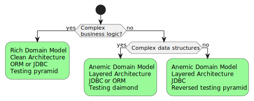

Money Transfer Kata
Money Transfer Anemic
Layered Architecture
Anemic Domain Model
Domain object contains only data. All business logic located in service layer.
- Pros
- Simple and widely accepted approach.
- Cons
- Mixing IO with business logic leads to fragile tests, that hard to write.
- Data can be changed from anywhere. No consistency guaranties.
- Hard to reason about data model invariants.
Money Transfer Rich
Clean Architecture
a.k.a. Hexagonal / Onion / Ports&Adapters Architecture

Rich Domain Model
Data and behavior encapsulated inside domain objects
- Pros
- Fast tests without mocks for business logic.
- Objects guarantee their consistency.
- Cons
- Required careful classes design. Not suitable for teams without experience
Testing Strategy
Choice of architectural style

Recommendations
- Functional core Imperative shell. Separate business logic from IO if it’s possible.
- Always valid domain model. Make wrong state impossible.
- No silver bullet. Use patterns and technologies only when they needed.